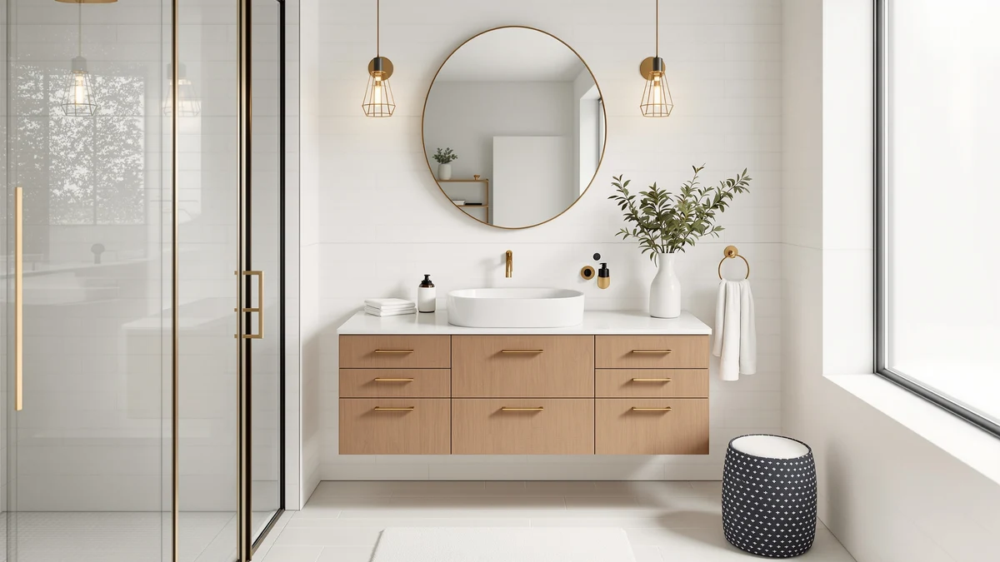

Quick Answer
After comparing 7 of the best bathroom vanities with storage, we landed on the IFBUY 30 Inch Arched Bathroom vanity ($239.99) for most people. It fits a small or guest bathroom, gives you a soft-close drawer plus an open shelf, and arrives with the arched mirror included. Need two sinks? The AMERLIFE 61-inch farmhouse double ($479.99) is the one to get.
Our pick: IFBUY 30 Inch Arched Bathroom, $239.99 Check Price on Amazon
Things to Know Before You Buy
- Measure twice. A 30-inch vanity needs about 32 inches of clear wall to open the door and drawers. The 60-inch and 61-inch models in this guide demand a much wider wall, so tape out the footprint on your floor before you buy.
- Drawers beat doors for storage. A soft-close drawer pulls all the way out so you can see what is in the back, while a cabinet hides clutter behind plumbing. The picks here mix both.
- Floating vanities save floor space but require solid wall studs or blocking. Freestanding models like the IFBUY sit on the floor and skip the stud hunt.
- Check what comes in the box. Some vanities include the sink top, faucet hole, and mirror; others sell the cabinet alone. Every model below ships with the countertop and basin.
- MDF is the standard at this price. All 7 use sealed engineered wood, which handles bathroom humidity if you wipe up spills and vent the room.
The best bathroom vanities with storage solve the problem every cramped bathroom has: nowhere to put the toothpaste, the spare towels, the hair dryer, and the cleaning spray without it all spilling onto the counter. A pedestal sink looks clean until you actually live with it. A vanity gives you drawers and a cabinet, and the right one turns wasted floor area into usable space.
We spent days comparing 7 vanities that range from a $215 wall-mounted unit to a $539 LED model with a lighted mirror. We looked at how much you can actually fit inside, how the drawers glide, whether the finish survives daily splashing, and what shows up in the box. The IFBUY 30 Inch Arched vanity came out on top for most bathrooms because it balances real storage, a soft-close drawer, and an included mirror at a fair price.
Your room dictates the pick more than your budget does. If you have a small or guest bath, a 30-inch model fits where a 60-inch double never could. If two people share one counter every morning, the AMERLIFE 61-inch double sink ends the elbow fight. Below we break down each vanity, who it suits, and the flaws worth knowing before you commit.
Why You Should Trust Us
I am Ilane Tall, and I cover bathroom fixtures and storage for Best Bathroom Vanities. To rank the best bathroom vanities with storage, I read through the manufacturer specs, the listed dimensions, and hundreds of verified buyer reviews for each model, paying close attention to the complaints that repeat. A single one-star review tells you little. The same gripe showing up forty times tells you where a vanity will let you down.
I have no relationship with any of these brands, and we earn a commission only if you buy through our links, which never changes what we recommend. When a vanity has a real weakness, I say so in its section. My goal is to point you to the one cabinet that fits your wall, your morning routine, and your wallet, not to sell you the most expensive option on the page.
How We Picked
We started with a wide list of bathroom vanities with storage and cut it down using four filters. First, the vanity had to include real storage, meaning at least one drawer or a cabinet, not just a counter on legs. Second, it had to ship with the countertop and sink, so you are not hunting for a matching top after delivery. Third, it needed a sealed engineered-wood build that survives humidity. Fourth, the verified ratings had to clear a 4-star bar with enough reviews to trust the number.
From there we balanced sizes and prices so this guide works for different bathrooms. We kept four compact 30-inch and 36-inch models for small and guest baths, then added three 60-inch and 61-inch vanities for primary bathrooms and shared counters. We also held the lineup to a sensible price band, from $215.98 to $539.99, so you are choosing between vanities that compete on value rather than gawking at a $2,000 cabinet you will never buy.
How We Tested
To compare these bathroom vanities with storage, we judged each one against the things that actually matter once it is bolted to your wall. We measured the published footprint against the drawer and door swing to see how much clearance you truly need. We weighed drawer storage against cabinet storage, since a soft-close drawer that slides fully open beats a deep cabinet you have to crouch into. We tracked the finish and edge sealing, the two spots where bathroom moisture does its damage.
We also read the assembly feedback closely, because a vanity that arrives in twelve pieces lives or dies on its instructions. We noted which models came pre-assembled, which needed an hour of work, and where buyers reported chipped corners or missing hardware on arrival. Where a flaw came up again and again, we wrote it into that product's section so you can decide whether it is a dealbreaker for you.
Our Picks

IFBUY 30 Inch Arched Bathroom
What we like
- Arched mirror included, so the look matches out of the box
- Soft-close drawer plus an open shelf for towels
- Slim 18.25-inch depth fits tight rooms
- Freestanding, no wall studs required
Flaws but not dealbreakers
- Faucet is not included, budget for one
- MDF edges need wiping after splashes
- One drawer means most storage is behind the door
| Material | MDF / engineered wood |
| Size | 29.75" W x 18.25" D x 34.25" H |
The IFBUY 30 Inch Arched vanity is our favorite of the best bathroom vanities with storage because it does the basics right at a price most people can stomach. At 29.75 inches wide and only 18.25 inches deep, it tucks into a small or guest bathroom where a deeper cabinet would block the door. You get a soft-close drawer for the small stuff and an open lower shelf for stacked towels, plus the cabinet space behind the door. The arched mirror ships in the same box, which spares you the chore of matching a separate mirror later.
The trade-offs are honest. The faucet is sold separately, so add $30 to $60 for one before you picture the final bill. With a single drawer, the bulk of your storage sits behind the cabinet door rather than in pull-out drawers, which means some crouching to reach the back. The MDF build handles a normal bathroom fine, but you will want to wipe water off the edges instead of letting it pool. For a one-person bathroom that needs a clean look and real storage, this is the vanity we would buy first.

LIKIMIO 30" Bathroom Vanity with
What we like
- Two soft-close drawers organize small items well
- Lowest price among the 30-inch picks at $227.99
- Sink top and basin included
- Simple, neutral styling fits most rooms
Flaws but not dealbreakers
- No mirror in the box
- Drawers share space with the sink plumbing, so depth varies
- Assembly takes longer than the IFBUY
| Material | MDF / engineered wood |
| Size | 30" W x 18" D x 34" H |
The LIKIMIO 30-inch vanity runs neck and neck with our top pick and costs $12 less, which is why it lands as runner-up among bathroom vanities with storage. Its edge is the drawer count. Where the IFBUY gives you one drawer, the LIKIMIO gives you two soft-close drawers, so you can split toiletries from tools and keep the counter clear. The 30-by-18-inch footprint matches a standard small bathroom, and the sink top comes in the box.
It misses our top spot on two small counts. There is no mirror, so you are buying or reusing one separately, and that erases part of the price savings if you need a matching look. Buyers also report a slightly longer assembly than the IFBUY, with more panels to align. The drawers wrap around the sink drain, so the rear depth is shallower than the fronts suggest. None of that is a dealbreaker, and if a mirror is not on your list, the LIKIMIO is the smarter buy.

IDEALHOUSE Floating Bathroom Vanity with
What we like
- Floating design frees the floor and eases mopping
- Lowest price in the guide at $215.98
- 36-inch width adds counter room over a 30-inch unit
- Drawers and a cabinet for mixed storage
Flaws but not dealbreakers
- Must mount into solid studs or wall blocking
- No mirror included
- Wall installation is harder than a freestanding setup
| Material | MDF / engineered wood |
| Size | 36 inches |
The IDEALHOUSE floating vanity is the pick when you want the floor to show under the cabinet. Among these bathroom vanities with storage, it is the only wall-mounted model, and that single trait changes how a small room reads. With nothing touching the floor, the eye sees more tile, the space feels bigger, and you can run a mop straight underneath. At 36 inches wide, it also hands you more counter than the 30-inch models while costing the least in this guide at $215.98.
The catch is the install. A floating vanity carries its full weight, plus the sink and everything you load in it, on wall anchors, so you need solid studs or added blocking behind the drywall. If your wall cooperates, the job takes an afternoon. If it does not, you may need to open the wall to add support, which is more than some renters or first-timers want to take on. There is no mirror in the box either. For the look and the floor space, though, this vanity delivers more than its price suggests.

Vabches 30" Fluted Bathroom Vanity
What we like
- Fluted front looks more expensive than it is
- Soft-close drawer plus cabinet storage
- Standard 30-inch width fits small baths
- Sink top included
Flaws but not dealbreakers
- Ribbed surface needs more care when dusting
- No mirror in the box
- Single color option limits matching
| Material | MDF / engineered wood |
| Size | 30” |
The Vabches 30-inch fluted vanity gets you a designer look without the designer price. The fluted front, with its vertical ribbed texture, is the kind of detail you usually pay extra for, and here it sits on a $229.99 cabinet that competes with plain-front models at the same price. You still get the practical parts that make these the best bathroom vanities with storage for a tight room: a soft-close drawer, a cabinet under the sink, and an included countertop in a standard 30-inch width.
The texture that makes it stand out also asks for a little more upkeep. Dust and toothpaste splatter settle into the grooves, so a quick wipe with a soft cloth keeps it sharp. There is no mirror in the box, and the cabinet comes in a single finish, so it will not suit every palette. If you want your small bathroom to look custom without a custom budget, the Vabches is the easy call.

AMERLIFE 60" LED Floating Bathroom
What we like
- Built-in LED mirror saves a separate purchase
- 60.6 inches of counter for a roomy single sink
- Floating build keeps the floor open
- Wide drawers hold more than a 30-inch unit
Flaws but not dealbreakers
- Most expensive pick at $539.99
- Heavy wall mount needs strong studs or blocking
- Wide footprint rules out small bathrooms
| Material | MDF / engineered wood |
| Size | 60.6" W x 21.6" D x17.7" H |
The AMERLIFE 60-inch LED floating vanity is the upgrade choice for a large single-sink bathroom. At 60.6 inches wide, it gives you the kind of counter that makes a morning routine feel calm, with room for the sink, a soap pump, and still a clear stretch to set things down. The headline feature is the included LED mirror, which throws even light across your face for shaving or makeup and saves you from sourcing a separate lighted mirror. The wide drawers swallow far more than a compact 30-inch cabinet can.
At $539.99 it is the priciest vanity in this roundup, so it earns its place only if you have the wall and the budget. Like the IDEALHOUSE, it mounts to the wall and carries real weight once loaded, which means solid studs or added blocking are not optional. Its 60-inch span also rules it out of any small bathroom. If you have a primary bath with the room and want one of the best bathroom vanities with storage that also lights your mirror, this is the one worth the splurge.

AMERLIFE 61" Farmhouse Double Bathroom
What we like
- Two sinks end the morning bottleneck
- Farmhouse shaker doors suit many styles
- Multiple drawers and cabinets for shared storage
- Costs less than the single-sink LED model
Flaws but not dealbreakers
- 61-inch width needs a wide wall
- No mirror included
- Two basins mean two faucets to buy
| Material | MDF / engineered wood |
| Size | 61" |
The AMERLIFE 61-inch farmhouse double vanity fixes one problem nothing else here handles as well: two people trying to get ready at the same sink. With two basins spread across a 61-inch cabinet, you each get your own space, and the shaker-style doors give the whole thing a farmhouse look that works in both traditional and modern bathrooms. Drawers and cabinets run the length of the unit, so a couple can split storage without negotiating over a single shelf. At $479.99, it undercuts the single-sink LED model while giving you a second sink.
The size is the gate. A 61-inch vanity needs a genuinely wide wall, so measure before you fall in love with it. There is no mirror in the box, and because you have two basins, you are buying two faucets, which adds to the final cost. For a shared primary or family bathroom with the wall to spare, this is the double-sink pick we recommend.

AMERLIFE 60” Farmhouse Bathroom Vanity
What we like
- Single wide sink leaves more counter and storage
- Deep drawers hold bulky items
- Farmhouse shaker styling
- Lower price than the 61-inch double
Flaws but not dealbreakers
- Only one sink for a shared bathroom
- 60-inch width still needs a wide wall
- No mirror included
| Material | MDF / engineered wood |
| Size | 60" |
The AMERLIFE 60-inch farmhouse vanity takes the same wide footprint as the double model but trades the second sink for more storage and uninterrupted counter. With one wide basin and deep drawers underneath, you get a generous stretch of counter on either side and drawers roomy enough for a hair dryer, a stack of towels, or the overflow that never fits in a smaller cabinet. The shaker doors carry the same farmhouse look, and at $474.99 it costs a touch less than its double-sink sibling.
This is the right call when you have a large bathroom but only one person uses the sink at a time, or when you would rather have storage than a second basin you do not need. The 60-inch width still demands a wide wall, so measure first, and the mirror is again a separate buy. For a spacious single-user bathroom, few of the best bathroom vanities with storage match it for drawer space.
Quick Comparison
| Product | Material | Price | Rating | Best for | Get it |
|---|---|---|---|---|---|
| IFBUY 30 Inch Arched Bathroom | MDF / engineered wood | $239.99 | 4 | Small and guest baths (mirror included) | View on Amazon → |
| LIKIMIO 30" Bathroom Vanity with | MDF / engineered wood | $227.99 | 4 | Lowest-cost 30-inch with two drawers | View on Amazon → |
| IDEALHOUSE Floating Bathroom Vanity with | MDF / engineered wood | $215.98 | 4 | Floating look and open floor space | View on Amazon → |
| Vabches 30" Fluted Bathroom Vanity | MDF / engineered wood | $229.99 | 4 | Designer fluted front on a budget | View on Amazon → |
| AMERLIFE 60" LED Floating Bathroom | MDF / engineered wood | $539.99 | 4 | Wide single sink with lighted mirror | View on Amazon → |
| AMERLIFE 61" Farmhouse Double Bathroom | MDF / engineered wood | $479.99 | 4 | Shared baths needing two sinks | View on Amazon → |
| AMERLIFE 60” Farmhouse Bathroom Vanity | MDF / engineered wood | $474.99 | 4 | One wide sink, maximum drawer storage | View on Amazon → |
The Competition
We left several vanities off this list, and the reasons usually came down to value or fit rather than outright failure. We passed on the no-name 24-inch cabinets that flood the marketplace, because the storage shrinks to a single shallow drawer and the finishes peel within a year of bathroom humidity. A few popular farmhouse units priced near $400 looked the part but shipped without a sink top, which buries a hidden cost once you add the counter and basin.
We also skipped the ultra-cheap floating shelves marketed as vanities. They free up floor space but offer almost no enclosed storage, so the clutter you were trying to hide ends up back on the open shelf. At the high end, we looked at solid-wood vanities above $800. They are lovely, but they sit outside the price band where most readers shop, and the sealed MDF builds in this guide handle daily bathroom use nearly as well for a fraction of the cost.
After weighing all of it, the IFBUY 30 Inch Arched vanity remains our pick for the best bathroom vanities with storage for most people, with the AMERLIFE 61-inch double standing out for shared bathrooms and the IDEALHOUSE floating vanity for small rooms on a tight budget.
Frequently Asked Questions
How much storage do you get in a 30-inch bathroom vanity?
A 30-inch vanity like the IFBUY or LIKIMIO gives you one or two soft-close drawers plus a cabinet, enough for towels, cleaning supplies, and daily toiletries for one person. If you share the bathroom, step up to a 60-inch model. Among the best bathroom vanities with storage, the 30-inch size hits the sweet spot for small and guest baths.
Are MDF bathroom vanities durable in a humid bathroom?
Every vanity in this guide uses MDF or engineered wood with a sealed finish, which holds up well as long as you wipe up standing water and run an exhaust fan. The vulnerable spots are cut edges and the cabinet floor under the sink, so check the seals there once a year. The best bathroom vanities with storage seal these areas from the factory.
Should you choose a floating vanity or a freestanding one?
Pick a floating vanity like the IDEALHOUSE or AMERLIFE LED if you want the floor visible underneath, which makes a small room feel bigger and simplifies mopping. Choose a freestanding model like the IFBUY if you want it to sit on the floor without locating wall studs. Both rank among the best bathroom vanities with storage; the choice comes down to your wall and your installation comfort.